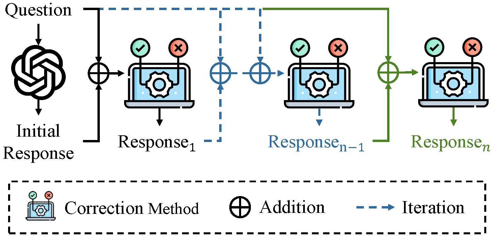

Can LLMs Correct Themselves? A Benchmark of Self-Correction in LLMs
Abstract: This paper introduces CorrectBench, a systematic benchmark to evaluate self-correction capabilities in large language models (LLMs), covering commonsense reasoning, mathematical reasoning, and code generation. The study reveals self-correction strategies can improve reasoning accuracy but may impact efficiency.
Introduction to Self-Correction
Large Language Models (LLMs) have greatly advanced, but ensuring their reliability and accuracy remains challenging. Self-correction methods help refine LLM responses through iterative feedback, enhancing performance particularly in complex reasoning tasks.
What is CorrectBench?
CorrectBench is a detailed benchmark developed to measure the effectiveness of self-correction methods in LLMs across various reasoning tasks. It evaluates intrinsic, external, and fine-tuned correction methods systematically.

Self-Correction Types
- Intrinsic Correction: Internal error correction without external aids.
- External Correction: Uses external tools and resources to correct errors.
- Fine-tuned Correction: Model adjustments through targeted fine-tuning.
Evaluation and Results
Findings indicate substantial accuracy improvements with self-correction, especially in mathematical and complex reasoning tasks. However, mixing methods may increase computational overhead significantly.

Conclusion and Implications
The benchmark emphasizes self-correction as a valuable tool for enhancing LLM performance, with a clear need to balance reasoning capabilities and efficiency. Future research should optimize this trade-off for practical applications.